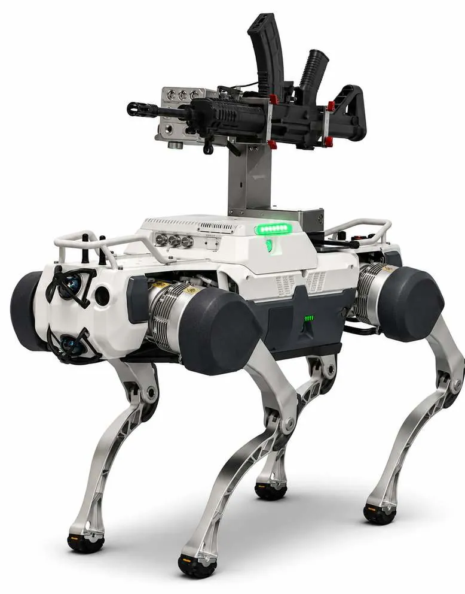
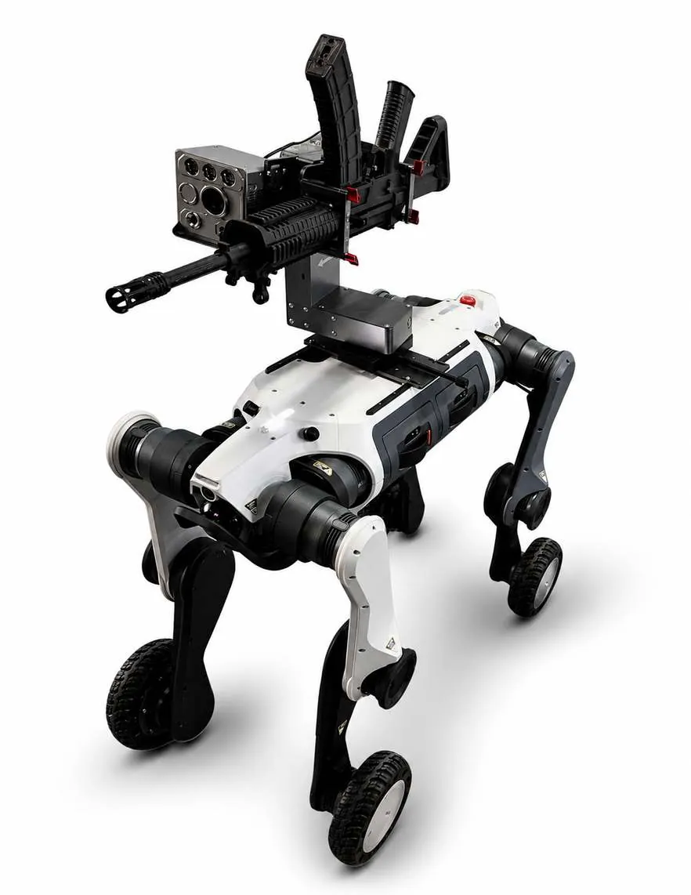

Dominate.
Intelligence and protection exist to enable action. This is where PrimeTEK's capability converts awareness and survivability into decisive operational outcomes.
Quadruped Ground Robots
Legged robots carry sensors, payloads and effectors into places that are too dangerous for personnel and too rough for wheels or tracks: culverts, rubble, stairs, forest floor and broken ground.
Reconnaissance
Scout buildings, tunnels and ambush-prone routes ahead of troops.
EOD support
Approach suspected devices and hazards without exposing personnel.
Site patrol
Autonomous perimeter and facility patrol for industrial and military sites.
Quadruped Ground Robots: X30
Wheeled and tracked platforms are constrained by the terrain they can physically traverse, a limitation that matters most in the environments where unmanned capability is needed most.
The X30 is PrimeTEK Multibiz's premier large-frame quadruped platform, optimised for sustained operations in demanding industrial and military environments. It combines a robust mechanical design with an advanced fused perception stack, delivering reliable autonomous navigation and payload delivery without the limitations of wheeled or tracked alternatives.
- Large-frame build for sustained operations
- Advanced fused perception stack
- Reliable autonomous navigation
- Mission payload delivery, including sensor and weapon mounts

Quadruped Ground Robots: M20
Operational environments do not stay consistent. A platform built for one terrain type loses effectiveness the moment conditions change.
The M20 merges the terrain adaptability of legged locomotion with the speed and efficiency of a wheeled platform. Its patented hybrid drive system enables dynamic switching between movement modes, making it uniquely suited to environments that transition rapidly between structured and unstructured terrain.
- Patented hybrid wheel-leg drive
- Dynamic switching between movement modes
- Speed on roads and corridors, agility on rough ground

Weapons and Ammunition
Rapid operational tempo, extended engagements or emerging threats create urgent and unpredictable demand for arms and ammunition.
Delays in procurement, limited supplier access or supply chain disruption can leave units under-equipped at the moment it matters most.
Major General Victor Ezugwu's decades of senior military engagement underpin PrimeTEK's credibility and access within the global defence ecosystem. Using relationships built across years of institutional command, the company maintains established links with a broad network of reputable arms and ammunition manufacturers and dealers worldwide, providing rapid and reliable sourcing of mission-critical weapons and munitions.
- Established links with reputable manufacturers and dealers worldwide
- Rapid response to urgent operational requirements
- Sourcing aligned with applicable end-user and regulatory requirements
- Complemented by PrimeTEK's own Nigerian-made munitions
Explore our local production line
From grenades and trip flares to kamikaze drones and remote weapon stations, see what PrimeTEK manufactures at home and at what capacity.